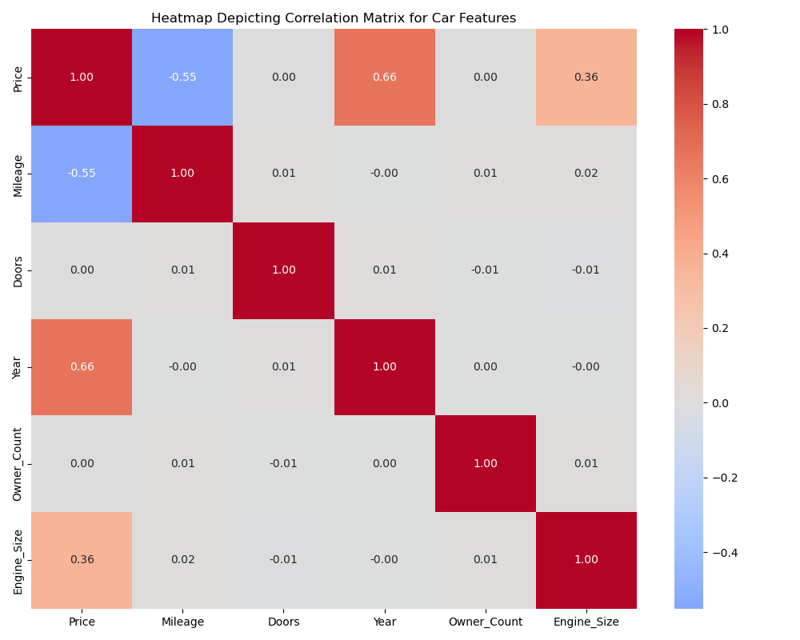
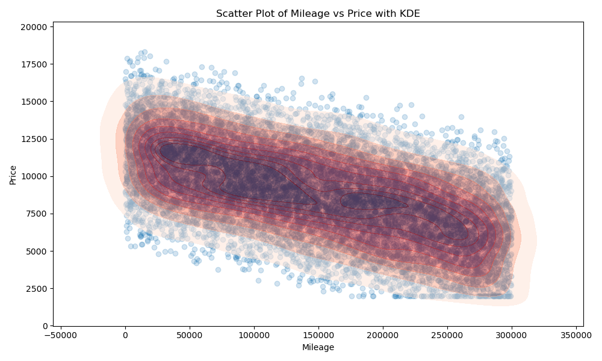
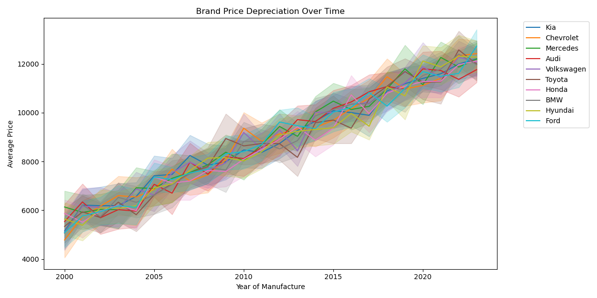

Which vehicle attributes have the greatest impact on resale price,
and how do market trends influence car depreciation?
Nico Poulsen, Carson Hunter, Miguel Gonzales
The auto industry is constantly changing due to a mix of shifting trends, the economy, and the current political landscape. Features that may have been unfathomable 20 years ago like partial self-driving capabilities and touchscreen displays have become the standard in today’s market, forcing companies to continuously adapt and innovate. The United States is one of the greatest players in this industry, with the Center for Automotive Research estimating 1.7 million jobs directly tied to it.
Because of the significant role it has played both historically and now, it is crucial to understand and predict consumer trends in order to further industry growth. Understanding the shifts in the car market over time, especially when contextualizing these trends with the surrounding societal and economic landscape, can help stakeholders preemptively capture the dynamic needs of consumers. By analyzing cars and their features, one also can gain understanding of how they affect the sale price of a car. On the consumer side, having information on features and sale price can help to ensure a fair price is being paid for a given car. As CNBC reports, “82% of consumers are paying above sticker price for a new car”, so robust analyses could help to power informed decisions.
In this project, we aimed to answer key questions using five visualizations—three static and two interactive—to explore which features most affect car prices and how market trends shape depreciation.
The dataset we selected focuses on cars and their prices, providing valuable insights into the factors that influence vehicle pricing. This dataset, sourced from Kaggle, contains 10,000 entries, each representing a different car with its key specifications and market price.
With 10 columns, it includes detailed information about each vehicle, allowing for in-depth analysis. The dataset captures attributes such as:
Below are key static plots that helped us explore our dataset and understand price drivers.
This heatmap, generated with Seaborn, visualizes the correlation coefficients (Pearson) between various car features. Notably, we can see that Mileage has a moderate negative correlation with Price (-0.55), which implies that as mileage increases, the price of a car will decrease. Additionally, the Year feature has the strongest positive correlation (0.66) which suggests that newer cars are generally more expensive. On the other hand, features like Engine Size (0.36) show slight positive correlations, while Number of Doors appears to have no correlation with price.

This scatter plot with KDE (Kernel Density Estimate) shows how car mileage is negatively associated with resale price. As expected, higher mileage generally leads to a drop in price. The KDE shading highlights clusters of high-density data, particularly among lower-priced vehicles with mid-range mileage. This visualization reinforces our earlier finding from the heatmap and emphasizes the importance of mileage as a resale predictor.

This line chart shows the relationship between the year of manufacture and average vehicle price across various car brands. It highlights a strong positive linear trend, indicating that newer cars tend to be more expensive across all brands. Despite being separated by brand, the lines largely overlap, suggesting that pricing trends have been consistent industry-wide, regardless of make. The shaded regions represent confidence intervals, giving insight into the variability of pricing within each brand. However, the overall similarity between the lines indicates that most brands experienced similar pricing trajectories over time. This visualization is particularly useful for understanding how vehicle prices have evolved over the years and reinforces that year of manufacture is a strong predictor of average car price, with only slight variations between brands.

This interactive Altair chart visualizes how car prices vary over the years for multiple brands. The scatter plot allows users to explore brand-specific pricing patterns by plotting each vehicle's manufacturing year on the x-axis and its resale price on the y-axis. Each point represents an individual vehicle, making it easy to identify clusters of high- or low-priced models across time.
By using the brand dropdown, users can isolate specific manufacturers and compare how each brand's vehicles depreciate with age. The price slider below the plot provides additional control to focus on budget-friendly or high-end vehicles, helping to remove outliers or narrow in on a target price range. This makes it especially useful for consumers who want to identify good-value options or analysts seeking to understand brand-level depreciation trends.
The plot is zoomable and pan-enabled, letting users inspect specific regions more closely. Additionally, a Reset Zoom button is provided for convenience to return to the default view at any time. This interactivity turns a traditional static plot into a flexible exploration tool that supports both high-level overviews and focused inspections.
After exploring the scatter plot above, enter the ID of a car you liked to view more details.
These interactive bar charts, created with D3.js, analyze car prices based on various attributes. These charts dynamically display the average car prices grouped by selected features, such as brand, model, year, transmission type, fuel type, engine size, number of doors, or owner count. Users can filter the data by car condition (e.g., newer cars that are 5 years old or less, or older cars over 5 years old) and select a grouping feature through dropdown menus. The chart updates automatically when filters are applied or grouping features are changed, ensuring real-time visualization of insights based on user preferences.
The charts incorporate several interactive elements to enhance usability. Bars change color from steel blue to orange when hovered over, and a tooltip appears to display the exact average price for the hovered bar. The x-axis represents the selected feature's categories (e.g., brands or years), while the y-axis shows average price values in dollars. Numerical features like mileage or engine size are sorted numerically, whereas categorical features like brand are sorted by price values.
These visualizations allow users to identify trends such as which brands, models, or fuel types tend to have higher average prices. They also enable comparisons across groups—for instance, analyzing differences between newer and older cars or examining how average prices vary with attributes like transmission or engine size. Such insights can support decision-making related to car pricing strategies or purchasing preferences and help consumers understand which vehicle attributes have the greatest impact on resale price. According to the D3 bar charts, the features that had the most variation in average price were...
The analysis proved highly insightful in breaking down and understanding car prices based on a variety of vehicle attributes. The heatmap showed that features like mileage and year have strong correlations with price—mileage being the single greatest determining factor. This result is intuitive, as both year and mileage are proxies for a car's wear and tear over time.
To further explore these key attributes, we created additional visualizations. The scatter plot with KDE confirmed the strong negative relationship between mileage and price, where the highest density of cars followed a near-linear downward trend. We then built a line plot to illustrate car depreciation over time, clearly showing that older vehicles were significantly less expensive in a nearly perfect linear pattern.
While the line plot was helpful, we also wanted a more interactive, user-centered way to explore year and price. The result was an interactive Altair plot where users can filter by brand, adjust price thresholds, and even click on specific car IDs to get more details. This not only visualizes the year-price relationship but makes it actionable for users.
Finally, to explore categorical variables like brand, fuel type, or transmission, we developed an interactive D3 bar chart. Users can toggle car condition (e.g., older vs. newer) and group the data by various features to compare average prices. This allowed us to analyze the effects of both numeric and categorical attributes on resale value.
In the end, we found that year and mileage have the strongest impact on vehicle pricing. By combining both static and interactive tools, we created a dashboard that supports users in visual exploration, targeted vehicle research, and deeper understanding of pricing patterns—addressing the needs of both consumers and analysts alike. For future work, we believe that machine learning models could be used on this dataset to predict car price based on these features, which we have determined to have noticeable effects. By doing, for example, a regression model, users could input a given vehicle’s attributes and see it’s predicted price on a graph, showing what a fair market price would be for a car they’re considering. Also, if users wanted to compare a car they already know the price of to this dataset, adding functionality to add their own data points to the visualizations would give users an easy way to determine if they’re vehicle falls inline with current market trends.